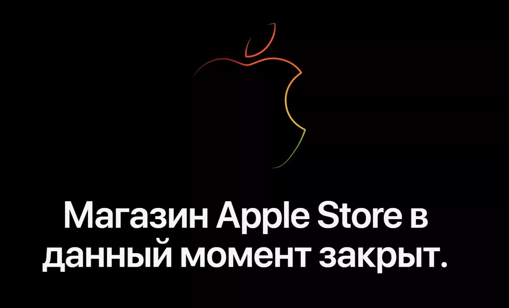
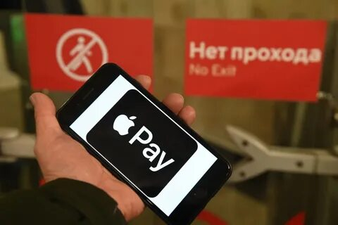

Компания Apple остановила продажи всей техники в России и отключила Apple Pay
Компания Apple объявила, что вводит ограничения для российского региона. Об этом сообщает Reuters. В частности, прекращаются продажи всех гаджетов в онлайн-магазинах Apple. На момент написания материала покупатели все еще могли получить доступ к интернет-магазину Apple, но попытки добавить товар в корзину или заказать доставку заканчиваются неудачей
Кроме того, корпорация отключила систему платежей Apple Pay и «другие услуги». Что именно оказалось под запретом, не раскрывается. В компании отметили, что такое решение было принято из-за российской спецоперации на Украине.
«Мы поддерживаем гуманитарные усилия, оказываем помощь в связи с разворачивающимся кризисом с беженцами и делаем все возможное, чтобы поддержать наши команды в регионе»
26 февраля украинский министр цифровой трансформации Михаил Федоров обратился с просьбой к главе компании Apple Тиму Куку прекратить поставки продукции в Россию. Кроме того, он хочет, чтобы для россиян был заблокирован доступ к магазину приложений App Store. Свой призыв политик объяснил началом российской спецоперации в Донбассе. По его словам, Вооруженные силы Украины и простые граждане защищают страну до конца, но им необходима поддержка. Введение озвученных им ограничительных мер, по его мнению, должно побудить многих россиян добиваться прекращения «военной агрессии».